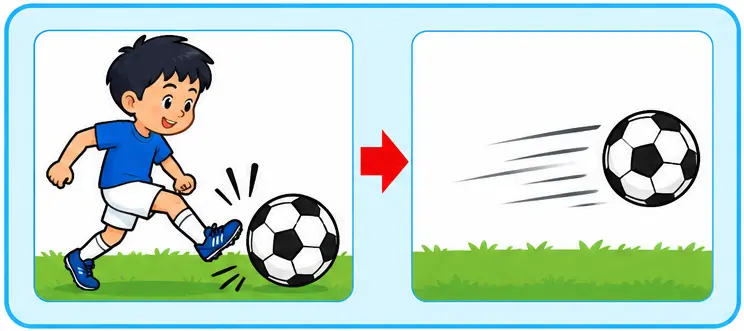
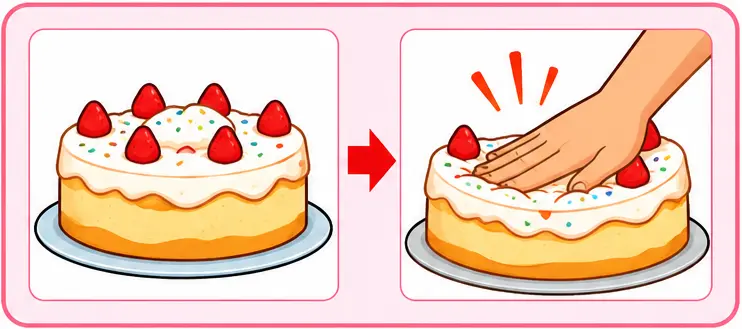
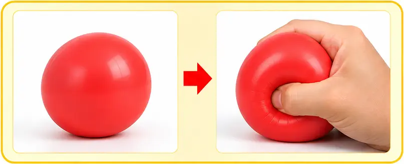
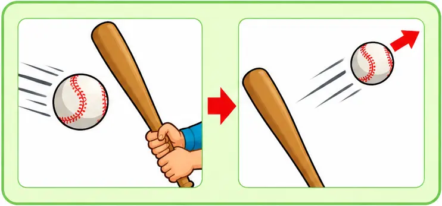

အား၏အကျိုးသက်ရောက်မှုများ
ဝတ္ထုတစ်ခုပေါ်သို့ ပြင်ပမှအား သက်ရောက်ခြင်းဖြင့် ဝတ္ထု၏ မူလအခြေအနေကို ပြောင်းလဲနိုင်သည်။ အားသည် ရပ်နေသောဝတ္ထု သို့မဟုတ် တစ်သမတ်ရွေ့လျားနေသော ဝတ္ထုများ၏ မူလအခြေအနေကို ပြောင်းလဲနိုင်သည်။ယင်းအားသည် ဝတ္ထု၏အမြန်နှုန်းကိုလည်းကောင်း၊ ဦးတည်ဘက် (လားရာ)ကိုလည်းကောင်း ပြောင်းလဲနိုင်စွမ်းရှိသည့်အပြင် ရွေ့နေသောဝတ္ထုကို ရပ်စေနိုင်သည်။ အားသည် ဝတ္ထု၏ မူလပုံသဏ္ဌာန်နှင့် အရွယ်အစားကိုလည်း ပြောင်းလဲစေနိုင်သည်။အားကို ဖော်ပြရာတွင် ပမာဏနှင့်လားရာ ၂ မျိုးစလုံးဖြင့် ဖော်ပြရသောကြောင့် ဗက်တာမတ္တာ (Vector quantity) ဖြစ်သည်။ အားနှင့် အရှိန်တို့၏ဆက်သွယ်ချက်ကို အောက်ပါ ပုံသေနည်းဖြင့် ဖော်ပြသည်။
အား = ဒြပ်ထု × အရှိန်
F(Force) = m(Mass) x a(Acceleration)
အား၏ယူနစ် (SI unit) မှာ newton (N) ဖြစ်သည်။
ဒြပ်ထု 1 kilogram (kg) ရှိသော အရာဝတ္ထုတစ်ခုပေါ်သို့ အားသက်ရောက်မှုကြောင့် အရှိန် 1 metre per squared second (ms⁻²) ရရှိလျှင် ယင်းအရာဝတ္ထုပေါ်တွင် သက်ရောက်သည့် အားမှာ 1 newton (N) ဖြစ်သည်။
တွက်ချက်မှု ဥပမာ
ဒြပ်ထု 2 kg ရှိတဲ့ လှည်းတစ်စီးကို 6 N အားနဲ့ တွန်းတယ်ဆိုပါစို့။ ပွတ်မှုအားကို လျစ်လျူရှုမယ်ဆိုရင် အရှိန်ပြောင်းလဲနှုန်း ဘယ်လောက်ရှိမလဲ။
m = 2 kg, F = 6 N
a = F / m ( ∵ F = ma)
= 6 / 2
∴ Ans: a = 3 m/s²
အား၏အကျိုးသက်ရောက်မှုများ (Effects of Force) သင်ခန်းစာတွင် ဖော်ပြထားသော လက်တွေ့လုပ်ဆောင်ချက်များနှင့် ဥပမာများနှင့် လေ့လာနိုင်ပါသည်။

ဘောလုံးတစ်လုံးကို ကန်ခြင်း
- မကန်မီ — ဘောလုံးသည် ငြိမ်နေသည်။
- ကန်လိုက်သောအခါ — ခြေထောက်မှ အားသက်ရောက်ပြီး ဘောလုံး ရွေ့လျားလာသည်။
- တွေ့ရှိချက် — အားကြောင့် ငြိမ်နေသောအရာဝတ္ထုတစ်ခုကို ရွေ့လျားစေနိုင်သည်။

မွေးနေ့ကိတ်ကို လက်ဖြင့် ဖိခြင်း
- မဖိမီ — ကိတ်မုန့်သည် မူလပုံသဏ္ဌာန်အတိုင်း ရှိနေသည်။
- ဖိလိုက်သောအခါ — ကိတ်မုန့်၏ မျက်နှာပြင် ချိုင့်ဝင်သွားသည်။
- တွေ့ရှိချက် — အားကြောင့် အရာဝတ္ထု၏ ပုံသဏ္ဌာန် ပြောင်းလဲနိုင်သည်။
ပူဖောင်းတစ်လုံးကို လေမှုတ်ခြင်း
- လေမမှုတ်မီ — ပူဖောင်းသည် သေးငယ်နေသည်။
- လေမှုတ်လိုက်သောအခါ — အတွင်းသို့ လေဝင်လာပြီး ပူဖောင်း ပိုကြီးလာသည်။
- တွေ့ရှိချက် — လေဖိအားကြောင့် ပူဖောင်း၏ အရွယ်အစားနှင့် ပုံသဏ္ဌာန် ပြောင်းလဲလာသည်။
ဈေးဝယ်တွန်းလှည်းကို တွန်းခြင်း
- မတွန်းမီ — ဈေးဝယ်တွန်းလှည်းသည် ငြိမ်နေသည်။
- တွန်းလိုက်သောအခါ — လက်ဖြင့် အားသက်ရောက်ပြီး တွန်းလှည်း ရွေ့လျားလာသည်။
- တွေ့ရှိချက် — အားကြောင့် ငြိမ်နေသောအရာဝတ္ထုတစ်ခုကို ရွေ့လျားစေနိုင်သည်။

ရော်ဘာဘောလုံးကို လက်ဖြင့်ညှစ်ခြင်း
- မညှစ်မီ — ရော်ဘာဘောလုံးသည် မူလပုံသဏ္ဌာန်အတိုင်း ရှိနေသည်။
- ညှစ်လိုက်သောအခါ — လက်ဖြင့် အားသက်ရောက်သောကြောင့် ဘောလုံး၏ ပုံသဏ္ဌာန် ပြောင်းလဲသွားသည်။
- တွေ့ရှိချက် — အားကြောင့် အရာဝတ္ထုတစ်ခု၏ ပုံသဏ္ဌာန်ကို ပြောင်းလဲစေနိုင်သည်။

ရွေ့လျားနေသော ပင်ပေါင်ဘောလုံးကို ဘက်တံဖြင့် ရိုက်ခြင်း
- မရိုက်မီ — ဘောလုံးသည် မူလဦးတည်ချက်အတိုင်း ရွေ့လျားနေသည်။
- ရိုက်လိုက်သောအခါ — ဘက်တံမှ အားသက်ရောက်ပြီး ဘောလုံး၏ အမြန်နှုန်းနှင့် ဦးတည်ချက် ပြောင်းလဲသွားနိုင်သည်။
- တွေ့ရှိချက် — အားကြောင့် ရွေ့လျားနေသောအရာဝတ္ထု၏ အမြန်နှုန်းနှင့် ဦးတည်ချက် ပြောင်းလဲနိုင်သည်။
အဓိကအချက်
ဝတ္ထုတစ်ခုပေါ်သို့ ပြင်ပမှအား သက်ရောက်ခြင်းအားဖြင့် ဝတ္ထု၏ မူလအခြေအနေ ကို ပြောင်းလဲနိုင်သည်။ အားသည် ရပ်နေသောဝတ္ထု သို့မဟုတ် တစ်သမတ်ရွေ့လျား နေသော ဝတ္ထုများ၏ မူလအခြေအနေကို ပြောင်းလဲနိုင်သည်။